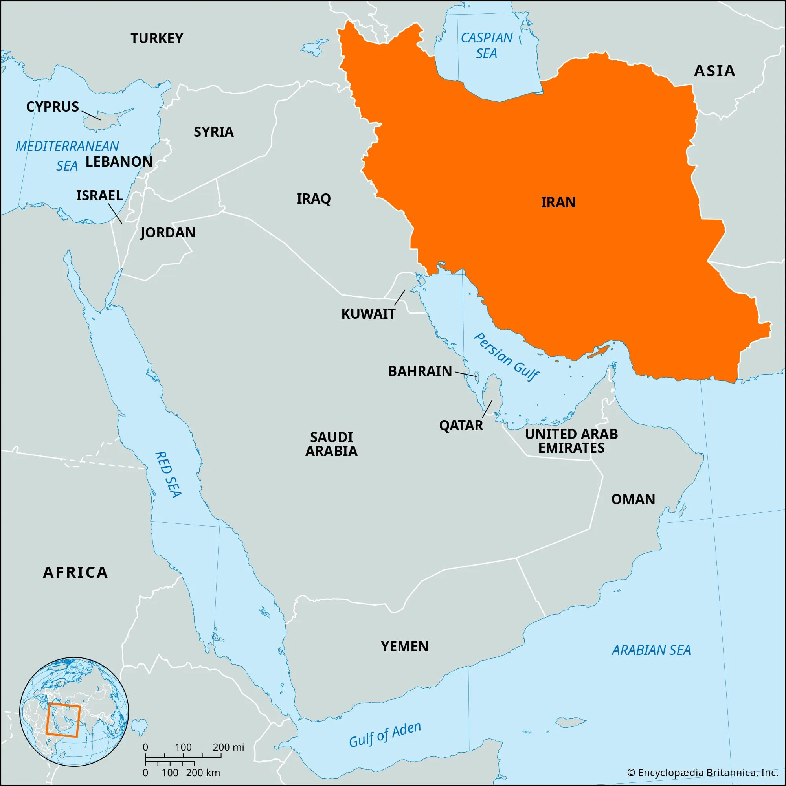
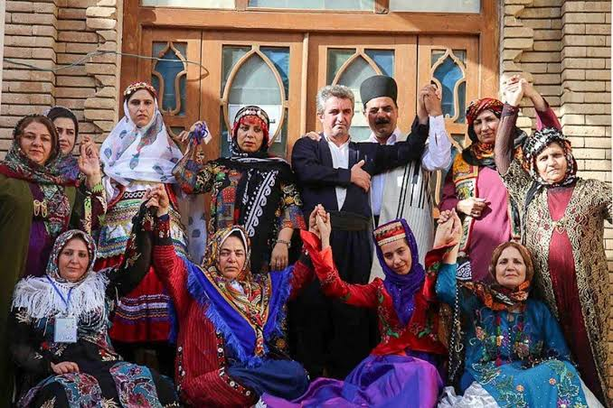
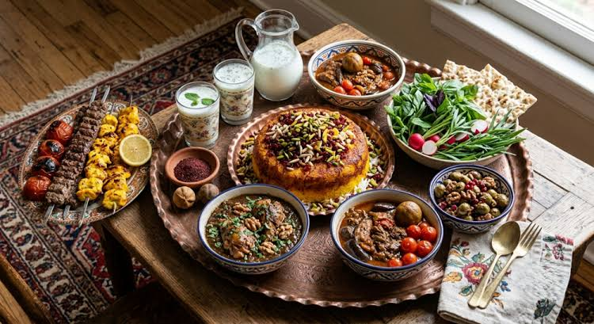
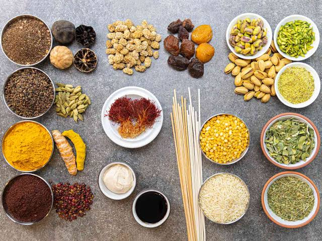
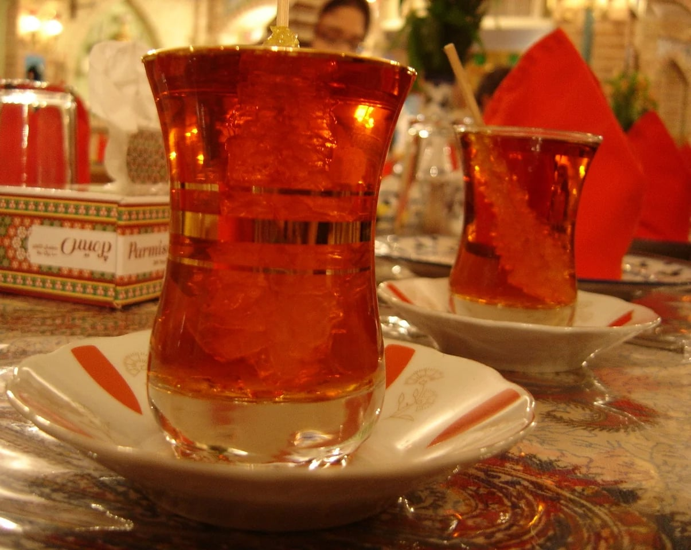
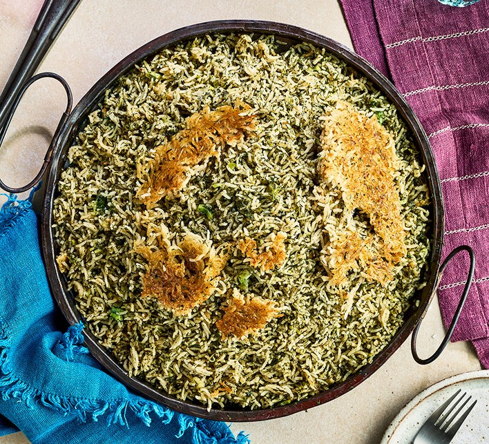
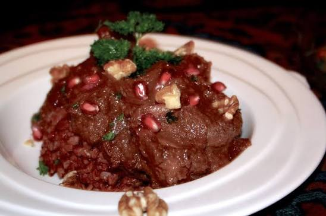

Iran is located in Western Asia, bordered by Iraq, Turkey, Armenia, Azerbaijan, Turkmenistan, Afghanistan, and Pakistan, with coastlines along the Caspian Sea and the Persian Gulf.

Background and Culture
Iran has a deep history tied to Persian civilization, poetry (Hafez, Rumi), art, and architecture. Known for hospitality, tea culture, and traditional bazaars.

Description of Iranian Cuisine
Iranian cuisine emphasizes rice (chelow), herbs, saffron, pomegranates, and slow-cooked stews. Regional diversity includes seafood in the south and hearty lamb dishes in the north.

Commonly Used Ingredients
Meats: Lamb, chicken, beef
Vegetables: Eggplant, spinach, tomatoes, onions
Grains and Breads: Rice, wheat flatbreads
Pantry Essentials: Saffron, turmeric, dried limes, rose water, yogurt

Interesting Food Culture Facts
Tea & Hospitality
Tea (chai) is central to Iranian social life, often served with sugar cubes.

Nowruz Cuisine
During Persian New Year, symbolic dishes like Sabzi Polo (herbed rice with fish) are prepared.

1. Fesenjan (Pomegranate Walnut Stew)

Description
Fesenjan is a rich Persian stew made with ground walnuts and pomegranate molasses, often cooked with chicken or duck. It is known for its sweet-sour flavor and is traditionally served at celebrations.
Ingredients
500g chicken thighs
2 cups walnuts, ground
1 cup pomegranate molasses
1 large onion, chopped
2 tbsp vegetable oil
2 cups chicken stock
Salt and pepper to taste
Preparation
Sauté onions in oil until golden.
Add ground walnuts and stir for 5 minutes.
Add chicken pieces and brown lightly.
Pour in stock and simmer for 30 minutes.
Stir in pomegranate molasses and cook until thickened.
Cooking Tips
Toast walnuts lightly before grinding for deeper flavor.
Adjust molasses for sweetness or tartness.
Serve with saffron rice for authenticity.
Recipe Details
Ingredient
Quantity
Preparation Time
Cooking Time
Serving Size
Serving Suggestions
Chicken Thighs
500 g
20 mins
1 hour
4
Serve with saffron basmati rice.
Walnut and pomegranate stew
4 servings
Chef Quote:
“Fesenjan is the poetry of Persian cuisine.” — Chef Parviz (Fictional)
Chelo Kebab is Iran’s national dish, featuring saffron rice served with grilled lamb or beef kebabs, butter, and grilled tomato. It symbolizes Persian hospitality and tradition.
Ingredients
500g ground lamb or beef
1 large onion, grated
1 tsp turmeric
Salt and pepper to taste
2 cups basmati rice
1/4 tsp saffron threads
2 tbsp butter
2 tomatoes
Preparation
Mix meat with onion, turmeric, salt, and pepper.
Shape into long kebabs and grill over charcoal.
Cook rice until fluffy, then infuse with saffron water.
Serve kebabs over rice with butter and grilled tomato.
Cooking Tips
Use charcoal grilling for authentic smoky flavor.
Drain onion juice to prevent soggy kebabs.
Always serve with saffron rice for tradition.
Recipe Details
Ingredient
Quantity
Preparation Time
Cooking Time
Serving Size
Serving Suggestions
Ground Lamb
500 g
25 mins
30 mins
4
Serve with saffron rice and grilled tomato.
Grilled kebabs with rice
4 servings
Chef Quote:
“Chelo Kebab is the soul of Persian gatherings.” — Chef Shirin (Fictional)
Ghormeh Sabzi is a fragrant herb stew made with lamb, kidney beans, and dried limes. It is considered the “king of stews” in Iran and is loved for its earthy, tangy flavor.
Ingredients
400g lamb cubes
2 cups mixed herbs (parsley, cilantro, fenugreek)
1 cup kidney beans
2 dried limes
1 large onion, chopped
3 tbsp vegetable oil
2 cups beef stock
Salt and pepper to taste
Preparation
Sauté onions and lamb until browned.
Add herbs and fry until aromatic.
Add beans, dried limes, and stock.
Simmer for 2 hours until lamb is tender.
Serve hot with rice.
Cooking Tips
Use dried fenugreek for authentic flavor.
Pierce dried limes before adding to release aroma.
Cook slowly for depth of flavor.
Recipe Details
Ingredient
Quantity
Preparation Time
Cooking Time
Serving Size
Serving Suggestions
Lamb Cubes
400 g
20 mins
2 hours
4
Serve with steamed basmati rice.
Herb stew with lamb and beans
4 servings
Chef Quote:
“Ghormeh Sabzi is the pride of Persian kitchens.” — Chef Dariush (Fictional)
Tahdig is the golden, crispy crust of rice at the bottom of the pot, considered the most prized part of any Persian meal. It can be made with plain rice, potatoes, or even flatbread layered under the rice.
Ingredients
3 cups basmati rice
2 tbsp butter or oil
1 medium potato, thinly sliced (optional)
1/4 tsp saffron threads
Salt to taste
Preparation
Parboil rice until slightly tender, then drain.
Mix saffron with melted butter or oil.
Place potato slices or bread at the bottom of the pot.
Layer rice on top and drizzle with saffron butter.
Cover and steam on low heat until rice is fluffy and crust forms.
Cooking Tips
Use a non-stick pot for easier removal of the crust.
Keep heat low to avoid burning.
Invert the pot onto a platter to reveal the crispy layer.
Recipe Details
Ingredient
Quantity
Preparation Time
Cooking Time
Serving Size
Serving Suggestions
Basmati Rice
3 cups
20 mins
45 mins
4
Serve alongside Persian stews or kebabs.
Crispy saffron rice crust
4 servings
Chef Quote:
“Tahdig is the crown jewel of Persian rice.” — Chef Laleh (Fictional)
Ash Reshteh is a thick, hearty soup made with herbs, beans, and noodles, topped with fried onions and kashk (fermented whey). It is often served during Nowruz (Persian New Year) and symbolizes prosperity and good fortune.
From the five Iranian dishes, the one I’d really like to try is Fesenjan.
I picked it because the mix of walnuts and pomegranate molasses sounds unique,
rich, and comforting. While learning about Iranian food, I realized how central
rice and herbs are to their meals, and how dishes often balance sweet and sour
flavors. It also showed me that food in Iran is closely tied to culture and
celebrations like Nowruz. I would recommend Fesenjan to other people because
it’s flavorful, symbolic, and represents the depth of Persian tradition.